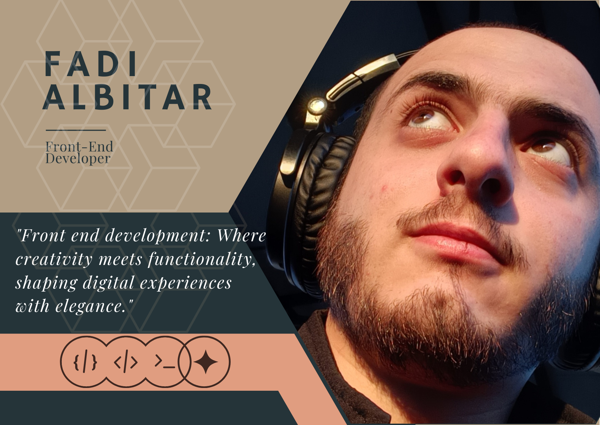

Welcome to My Portfolio
This is a showcase of my work and skills.
Here, you'll find a collection of projects that highlight my expertise and creativity in the field of web development. From elegant and intuitive user interfaces to robust backend implementations, each project represents a step forward in my journey as a developer.
I'm passionate about crafting meaningful and engaging digital experiences. Whether it's designing responsive layouts, implementing interactive features, or optimizing performance, I'm committed to delivering excellence in every aspect of my work.
Feel free to explore my projects and get in touch if you're interested in collaborating or learning more about my skills and experiences. Thank you for visiting my portfolio!